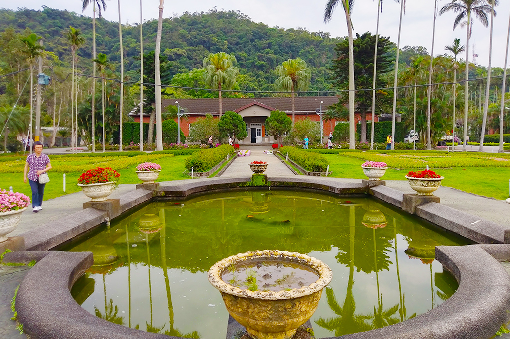
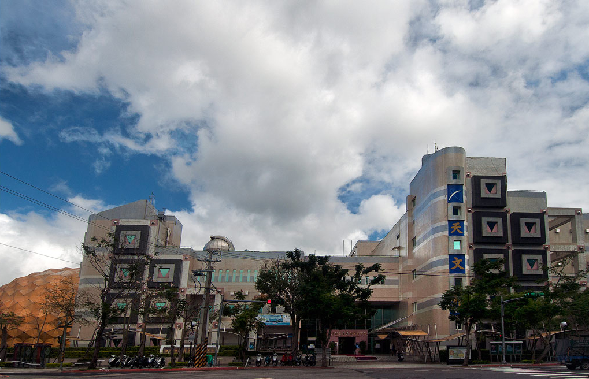
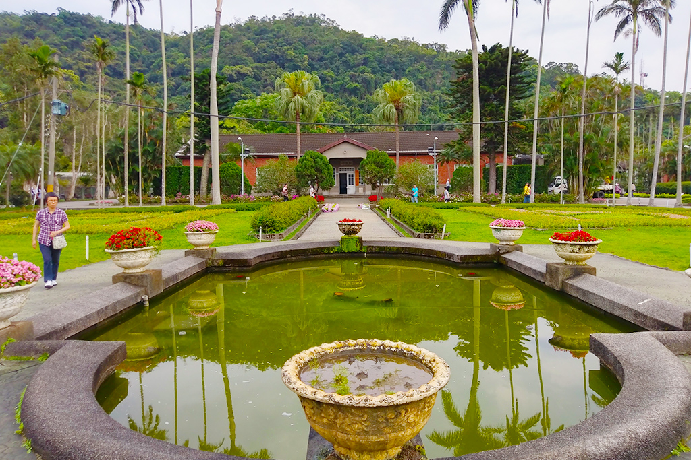
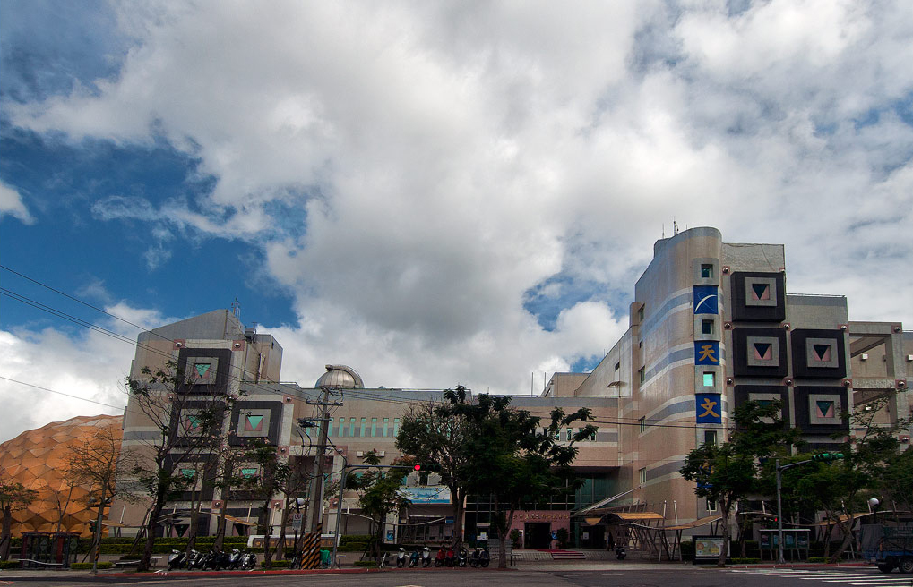

台北都會3日遊
士林夜市
士林夜市為臺北市最具規模的夜市之一，以陽明戲院及慈誠宮為中心，包含了文林路、大東路、大南路等熱鬧街市集結而成，其中士林市場早在民國前二年即已興建，以各種傳統小吃聞名國內外。
芝山文化生態綠園
芝山文化生態綠園位於陽明醫院對面，園區內除了有水生池、百年楓香樹等自然景物外，芝山岩展示館一樓設置了360°的環景模型，述說芝山岩與周圍臺北城的發展與地緣關係，有詳細的文獻資料來介紹芝山岩的人文歷史。

士林官邸
士林官邸坐落於士林區中山北路5段與福林路口東南側。原來是園藝管理所的一部份，在國民政府遷台後，1950年時，先總統蔣中正先生的官邸便設於此，從此士林官邸便成為臺北市民眼中神聖神秘且不可親近的禁地。

國立臺灣科學教育館
臺灣科學教育館將科學帶出實驗室，並自然地融入日常生活中，讓你輕鬆發現生活中的科學樂趣。不只要解答每一個「為什麼」的好奇與疑惑，更開展了科學的無限視野，深入淺出的帶你進入科學的奧妙世界。

臺北市立天文科學教育館
1938年，「臺灣日日新報社」為紀念創立40周年，因此將其建在公會堂屋頂上的4吋折射式赤道儀望遠鏡及圓頂觀測台，捐獻給臺北市役所。
士林夜市
士林夜市為臺北市最具規模的夜市之一，以陽明戲院及慈誠宮為中心，包含了文林路、大東路、大南路等熱鬧街市集結而成，其中士林市場早在民國前二年即已興建，以各種傳統小吃聞名國內外。芝山文化生態綠園
芝山文化生態綠園位於陽明醫院對面，園區內除了有水生池、百年楓香樹等自然景物外，芝山岩展示館一樓設置了360°的環景模型，述說芝山岩與周圍臺北城的發展與地緣關係，有詳細的文獻資料來介紹芝山岩的人文歷史。

士林官邸
士林官邸坐落於士林區中山北路5段與福林路口東南側。原來是園藝管理所的一部份，在國民政府遷台後，1950年時，先總統蔣中正先生的官邸便設於此，從此士林官邸便成為臺北市民眼中神聖神秘且不可親近的禁地。
國立臺灣科學教育館
臺灣科學教育館將科學帶出實驗室，並自然地融入日常生活中，讓你輕鬆發現生活中的科學樂趣。不只要解答每一個「為什麼」的好奇與疑惑，更開展了科學的無限視野，深入淺出的帶你進入科學的奧妙世界。
